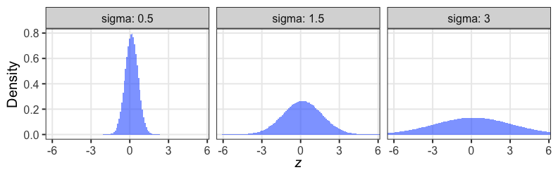
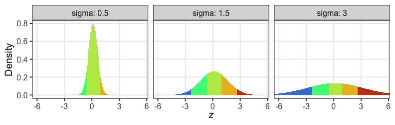

統計モデリング概論 DSHC 2022
東北大学 生命科学研究科 進化ゲノミクス分野 特任助教
(Graduate School of Life Sciences, Tohoku University)
(Graduate School of Life Sciences, Tohoku University)
2022-08-24 東京海上 Data Science Hill Climb
https://heavywatal.github.io/slides/tokiomarine2022/
GLMMで登場した個体差を階層ベイズモデルで

GLMMで登場した個体差を階層ベイズモデルで
植物100個体から8個ずつ種子を取って植えたら全体で半分ちょい発芽。
親1個体あたりの生存数はn=8の二項分布になるはずだけど、
極端な値(全部死亡、全部生存)が多かった。個体差？

個体差をモデルに組み込みたい
各個体の生存率$p_i$をそのままパラメータにすると過剰適合。
「パラメータ数 ≥ サンプルサイズ」の“データ読み上げ”モデル。
i.e., この個体は4個生き残って生存率0.5だね。次の個体は2個体だから……

個体の生存能力をもっと少ないパラメータで表現できないか？
個体差をモデルに組み込みたい
各個体の生存率$p_i$が能力値$z_i$のシグモイド関数で決まると仮定。
その能力値は全個体共通の正規分布に従うと仮定:
$z_i \sim \mathcal{N}(\hat z, \sigma)$
パラメータ2つで済む: 平均 $\hat z$, ばらつき $\sigma$ 。
前者は標本平均 $\hat p$ から求まるとして、後者どうする？
個体能力のばらつき $\sigma$ が大きいと両端が増える
普通の二項分布は個体差無し $\sigma = 0$ を仮定してるのと同じ。

zの値で色分けしてみると想像しやすい
正規分布と二項分布の混ぜ合わせ……?

階層ベイズモデルのイメージ図
事前分布のパラメータに、さらに事前分布を設定するので階層ベイズ

さっきの図をStan言語で記述すると
10 とか 3 とか、エイヤっと決めてるやつが超パラメータ。
data {
int<lower=0> N;
array[N] int<lower=0> y;
}
parameters {
real z_hat; // mean ability
real<lower=0> sigma; // sd of r
vector[N] r; // individual difference
}
transformed parameters {
vector[N] z = z_hat + r;
vector[N] p = inv_logit(z);
}
model {
y ~ binomial(8, p);
z_hat ~ normal(0, 10);
r ~ normal(0, sigma);
sigma ~ student_t(3, 0, 1);
}
変量効果が入った推定結果
Running MCMC with 4 chains, at most 6 in parallel...
Chain 1 finished in 0.4 seconds.
Chain 2 finished in 0.4 seconds.
Chain 3 finished in 0.4 seconds.
Chain 4 finished in 0.4 seconds.
All 4 chains finished successfully.
Mean chain execution time: 0.4 seconds.
Total execution time: 0.5 seconds.
variable mean median sd mad q5 q95 rhat ess_bulk ess_tail
lp__ -455.91 -455.40 9.20 9.28 -471.72 -442.03 1.00 901 1283
z_hat 0.25 0.25 0.31 0.31 -0.26 0.76 1.00 669 1152
sigma 2.78 2.75 0.33 0.33 2.28 3.36 1.00 1245 1425
r[1] -0.24 -0.24 0.78 0.77 -1.51 1.04 1.00 3474 2795
r[2] 1.76 1.69 1.04 1.01 0.17 3.54 1.00 4261 2733
r[3] 1.78 1.69 1.07 1.02 0.23 3.71 1.00 4065 2639
r[4] -3.77 -3.54 1.64 1.51 -6.65 -1.49 1.00 3422 2092
r[5] -2.21 -2.12 1.05 1.00 -4.10 -0.66 1.00 4879 2579
r[6] -2.18 -2.10 1.05 1.03 -4.01 -0.59 1.00 4225 2830
r[7] 0.91 0.90 0.86 0.87 -0.42 2.38 1.00 3393 2735
# showing 10 of 303 rows (change via 'max_rows' argument or 'cmdstanr_max_rows' option)
抜粋して作図。悪くない。
データ生成の真のパラメータ値は $\hat z = 0.5,~\sigma = 3.0$ だった。
Warning: The following arguments were unrecognized and ignored: bins
`stat_bin()` using `bins = 30`. Pick better value with `binwidth`.

🔰 階層ベイズモデルの練習問題
6-stan-hbm.ipynb
をJupyterで開き、スライド説明に沿って実行していこう。
非線形回帰の例: データ
刺激強度xに対する応答強度yを20個体調査。
非対称なひと山。応答変数も説明変数も正の値。
\[\begin{split}
y = ae ^ {-bx} - ce ^ {-dx}
\end{split}\]

非線形回帰の例: Stanコード
data {
int<lower=1> N;
vector[N] x;
vector[N] y;
int id[N];
int<lower=1> Ninds;
}
parameters {
real<lower=0> a;
real<lower=0> d;
real<lower=0,upper=a> c;
real<lower=0,upper=d> b;
real shape;
vector[Ninds] intercept;
}
model {
vector[N] mu = a * exp(-b * x) - (a - c) * exp(-d * x) + intercept[id];
y ~ gamma(shape, shape ./ mu);
a ~ normal(0, 100);
b ~ normal(0, 100);
c ~ normal(0, 100);
d ~ normal(0, 100);
shape ~ normal(0, 100);
intercept ~ normal(0, 0.005);
}
階層ベイズモデルのほかの応用先
- 時系列モデル (状態空間モデル)
- 空間構造のあるモデル (e.g., CARモデル)
- 欠損値の補完
ベイズ推定まとめ
- 条件付き確率 $\text{Prob}(B \mid A)$ の理解が大事。
- 事後分布 $\propto$ 尤度 ⨉ 事前分布
- 確信度合いをデータで更新していく。
- 推定結果は分布そのもの。
- そこから点推定も区間推定も可能。
- 解析的に解けない問題は計算機に乱数を振らせて解く。
- 理論・技術の進歩が目覚ましい。
回帰分析ふりかえり
より柔軟にモデルを記述できるようになった。計算方法も変化。
全体まとめ
- 統計とは、データをうまくまとめ、それに基づいて推論するための手法。
- モデルには理解志向と応用志向があり、統計モデルは前者寄り。
- どちらも多少は分かった上で使い分けたい。
- どっちにしろ真の正しい何かではない。
- 確率分布とその背後にある確率過程の理解が重要。
- 乱数生成→作図を繰り返してイメージを掴もう。
- MCMCサンプリングも事後分布からの乱数生成。
参考文献
- データ解析のための統計モデリング入門 久保拓弥 2012
- StanとRでベイズ統計モデリング 松浦健太郎 2016
- RとStanではじめる ベイズ統計モデリングによるデータ分析入門 馬場真哉 2019
- データ分析のための数理モデル入門 江崎貴裕 2020
- 分析者のためのデータ解釈学入門 江崎貴裕 2020
- 統計学を哲学する 大塚淳 2020